Techno RingConcept
Techno Ring
Designing a mixed-reality therapy companion for stressed university students
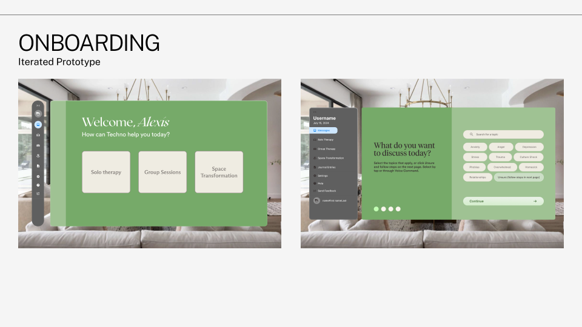
The challenge
University students, especially international students adjusting to a new country, are under heavy academic and emotional pressure. Many don’t know where to start with mental health support, and booking therapy can feel slow and intimidating.
The brief was speculative: design for ten years out, in a world where:
- Phones are no longer the most convenient device
- Wearables are far more advanced
- XR is woven into everyday life
Our concept was the Techno Ring, a wearable that projects a mixed-reality interface into the user’s surroundings for therapy, community, and calm.
How might we…
- make cognitive behavioural therapy more effective and convenient?
- extend the reach of support available to university students?
Constraints: it had to be prototypeable in Figma with no real XR hardware, we had about five weeks, and the interface had to stay legible over any real-world background.
Process
01 Understanding our users
We built two personas from early research, each with a journey map running from awareness through purchase, onboarding, integration, feedback and referral:
- Alexis, a first-year international student dealing with culture shock, homesickness and language barriers. She wants affordable, easy access to support.
- Rayna, a domestic student who already uses campus services but struggles to keep up her CBT coping strategies.
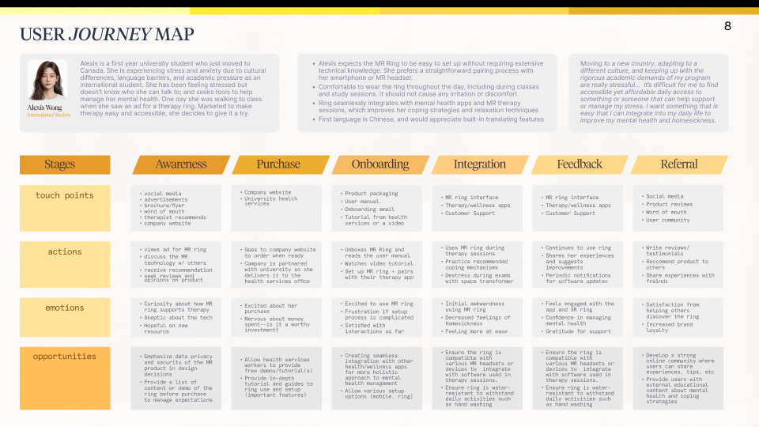
User flow diagrams for each persona mapped the core paths: sign up → onboarding → choose therapy → session → rebook.
02 Testing the low-fidelity prototype
We ran four moderated sessions on the first prototype (think-aloud plus a post-test interview) and synthesized the transcripts into three themes:
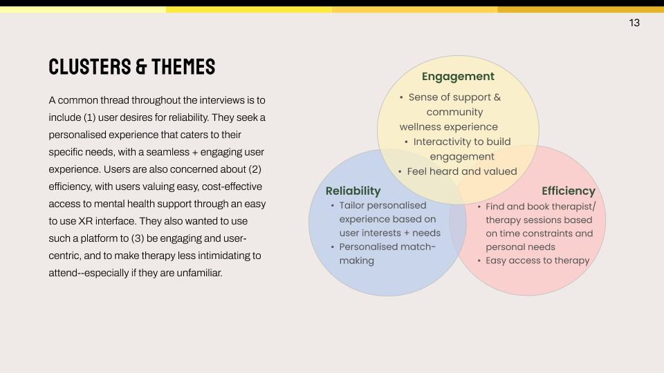
- Reliability: a personalised experience and personalised therapist matching
- Efficiency: finding and booking a therapist quickly, around a student’s schedule
- Engagement: feeling supported, heard and part of a community
The testing also surfaced four pain points:
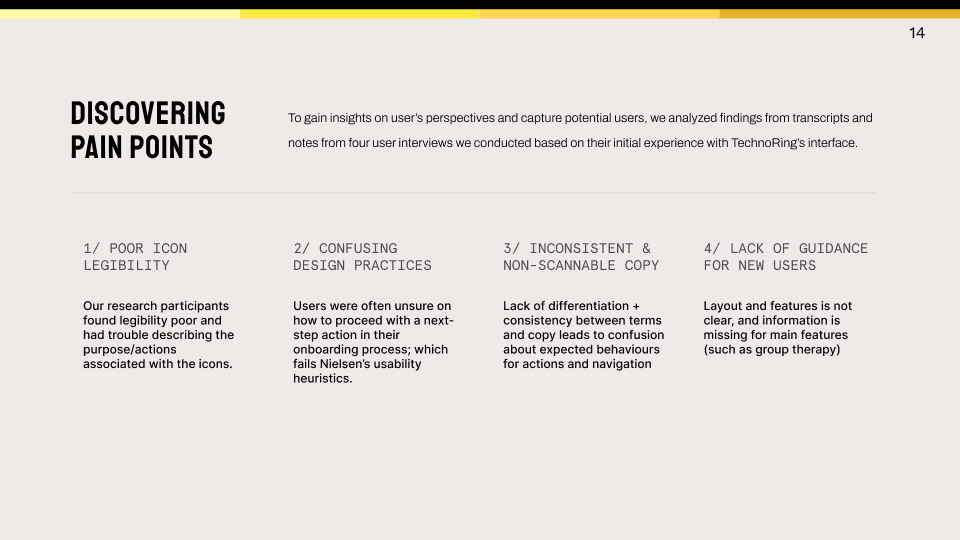
- Poor icon legibility. People couldn’t describe what icons did.
- Confusing next steps in onboarding, which broke Nielsen’s “visibility of system status” heuristic.
- Inconsistent, hard-to-scan copy. Terms changed between screens.
- No guidance for new users, especially on unfamiliar features like group therapy.
We iterated on every flow. For example, we moved from a curved, immersive panel to a flatter, more scannable layout with voice-to-text inputs, a progress bar, and a final “confirm your answers” step.
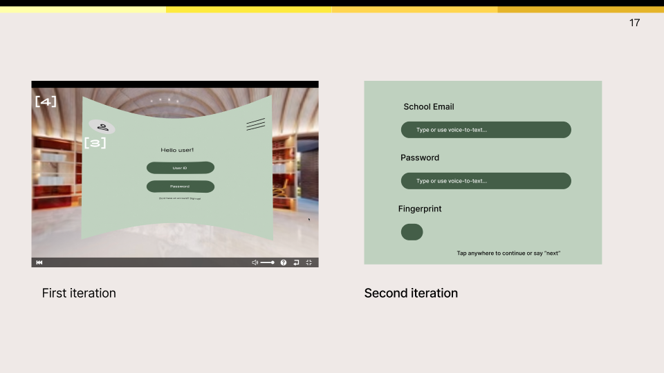
03 Designing for glass, not screens
Mixed reality changed the visual rules. Our design principles drew on Apple’s visionOS guidance and XR research:
- Avoid solid, opaque windows so users stay aware of their real surroundings.
- Default to white text on glass, because other colours can blend into the environment.
- Never stack light material on light material. Go dark on dark.
We built a matcha-green and neutral palette meant to read as calm wellness, plus a component library: navigation in full and minimized states, form states, toggles, call controls, and accessibility controls for captions, translation and privacy blur.
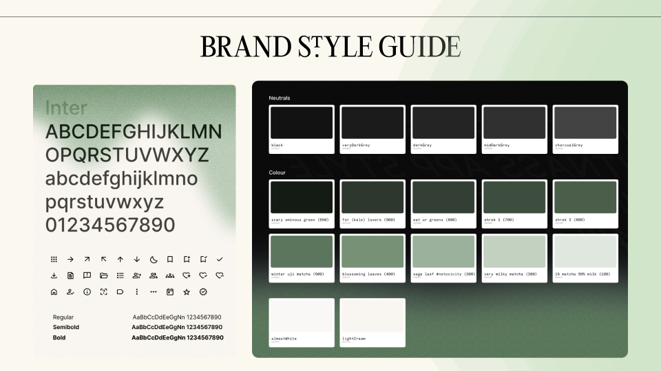
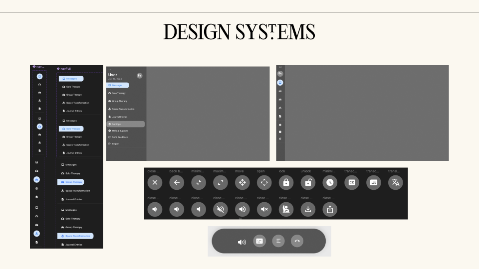
We also reviewed our own work against the 7 principles of Universal Design, including equitable use, tolerance for error and low physical effort.
04 Testing the high-fidelity prototype
Round two used four methods with four participants:
| Method | Analysis |
|---|---|
| Think-aloud across 5 tasks | Thematic analysis |
| Post-test interview | Affinity diagramming |
| A/B preference test | Preference comparison |
| System Usability Scale | SUS scoring |
What we heard
- Worked The matcha-and-cream palette built trust.
Giving wholesome matcha wellness vibes.
- Worked The confirmation and edit step felt safe.
People make mistakes, it’s good the product accounts for this.
- Worked Live captions, privacy blur and in-session controls were all praised.
- Fix Text switching from white to black partway through the flow felt inconsistent.
- Fix The red “Session ending soon” warning felt alarming. One participant said it felt like they were about to die.
- Fix Group therapy wasn’t explained, and therapist cards were hard to scan.
05 Turning findings into design changes
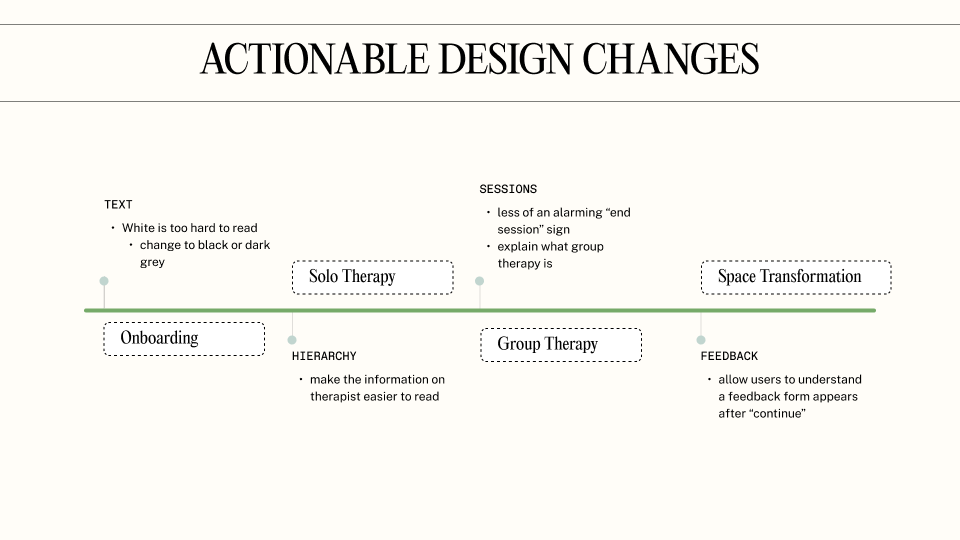
| Flow | Finding | Change |
|---|---|---|
| Onboarding | White text hard to read on light glass | Switched to dark text where the panel is light |
| Solo therapy | End-of-session warning felt alarming | Soften the warning’s colour and tone (next iteration) |
| Group therapy | Unclear what group therapy is | Added a 3-step intro: supportive environment, confidentiality, shared goals |
| Group therapy | Therapist info hard to scan | Reworked card hierarchy: name, credentials, sessions, reviews |
| Space transformation | Unclear what happens after “Continue” | Added a short, clearly timed feedback form |
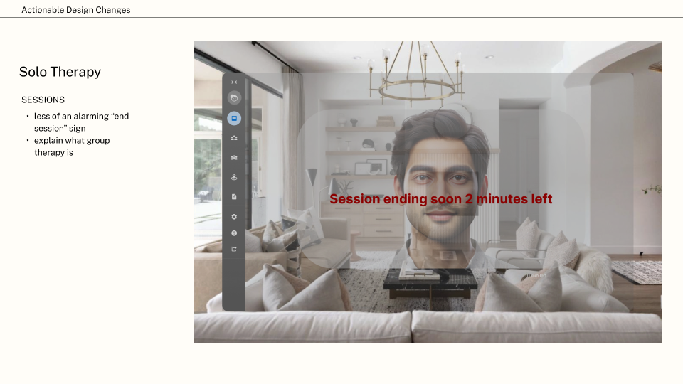
The solution
Techno Ring brings three experiences into one calm, glass-like interface floating in the user’s own room.
1 Guided onboarding
You pick topics such as anxiety, homesickness or culture shock, a session length and a therapist, then review and edit everything before you book. You can tap or use your voice for every step.
2 Solo and group therapy
Video sessions include live captions, a privacy blur so people nearby can’t see your screen, saved session notes, one-tap rebooking, and a shared availability calendar for scheduling groups.
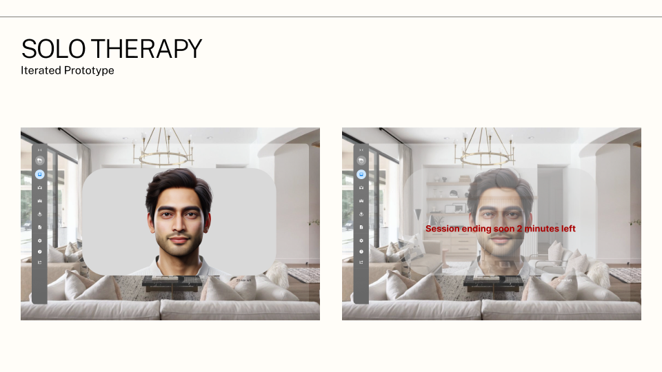
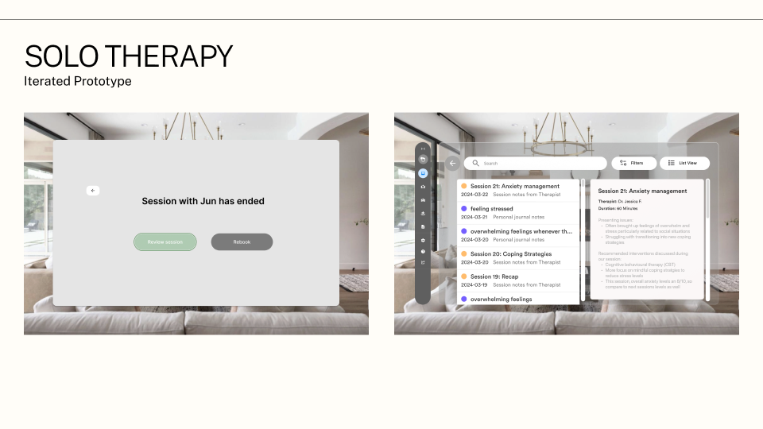
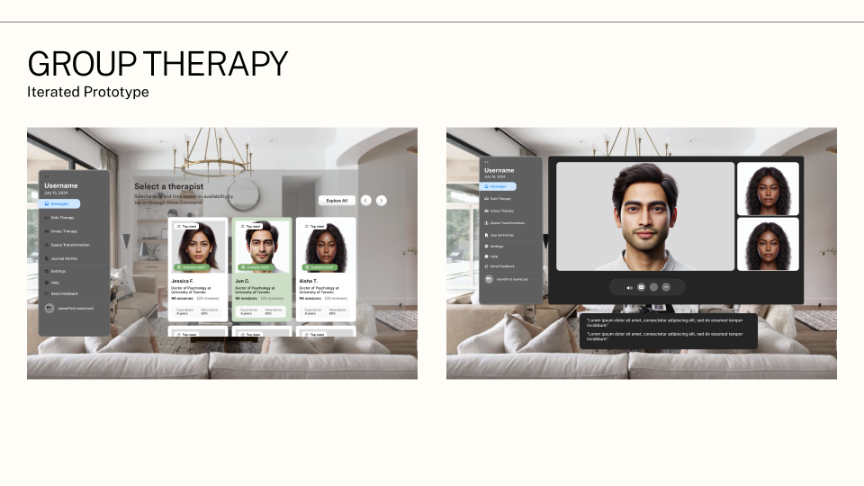
3 Space transformation
Turn your room into a calming environment by choosing an ambiance, a location and soundscape. When you’re done, a quick 1–10 rating and issue check closes the loop.
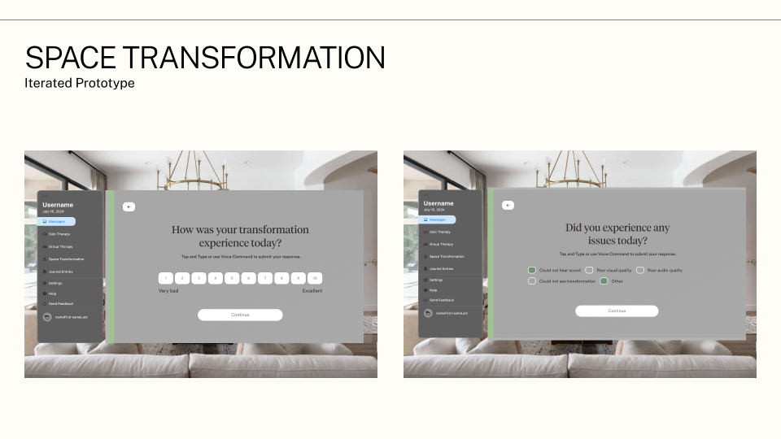
Impact
- 75average SUS score across 4 hi-fi participants, above the 68 benchmark for “good” usability
- 8moderated sessions across 2 rounds, all under University of Waterloo Research Ethics Board clearance
- 4/4hi-fi participants described the visual design as calming, clean or visually appealing
Target audience confirmed: participants consistently placed it with Gen Z to millennial users, which matched our personas.
What I’d do differently
- Lock in the design system first. Many of our inconsistencies, like text colour and alignment, came from building screens before the tokens and rules were settled.
- Iterate in smaller, more frequent loops instead of a few large updates.
- Test on real XR hardware, or at least in a headset passthrough mock. Legibility on glass is hard to judge on a laptop.
Reflection
As the team’s Insights Gatherer, I learned that interviewing users isn’t enough on its own. The useful changes came from coding transcripts, clustering themes and tracing each design change back to a quote. I also learned that designing for XR means designing for an environment you don’t control: every colour, text and layering decision has to hold up against someone’s real living room.
Speculative design pushed me to balance imagination with feasibility. We had to picture life ten years out and still ship something people could click through and critique today.